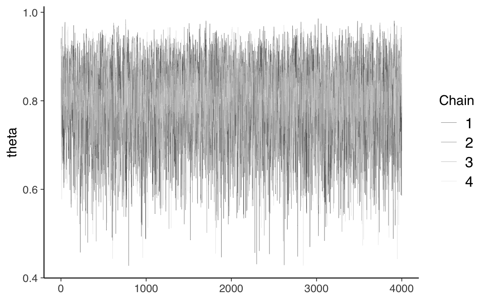
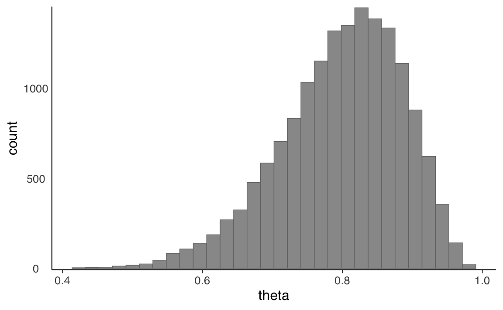
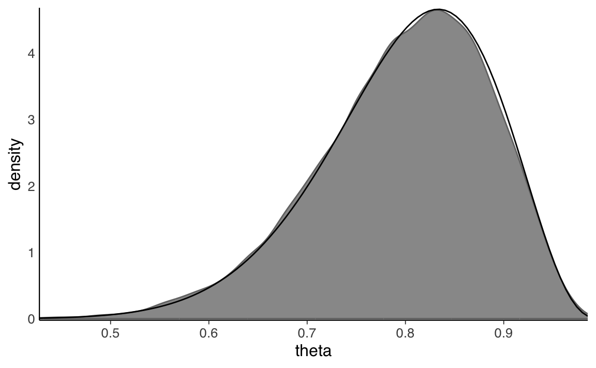

library("cmdstanr")
library("posterior")
availableCores()
SEED <- 84735 21 Il modello beta-binomiale in linguaggio Stan
In questo Capitolo introdurremo un linguaggio di programmazione probabilistica chiamato Stan (Carpenter et al., 2017). Stan consente di generare campioni da distribuzioni di probabilità basati sulla costruzione di una catena di Markov avente come distribuzione di equilibrio (o stazionaria) la distribuzione desiderata. Prende il nome da uno dei creatori del metodo Monte Carlo, Stanislaw Ulam (Eckhardt, 1987). Un’introduzione al linguaggio Stan è fornita in Appendice. In questo Capitolo useremo Stan per fare inferenza su una proporzione.
21.1 Il presidente Trump e l’idrossiclorochina
Per fare un esempio concreto, consideriamo un set di dati reali. Cito dal Washington Post del 7 aprile 2020:
One of the most bizarre and disturbing aspects of President Trump’s nightly press briefings on the coronavirus pandemic is when he turns into a drug salesman. Like a cable TV pitchman hawking ‘male enhancement’ pills, Trump regularly extols the virtues of taking hydroxychloroquine, a drug used to treat malaria and lupus, as a potential ‘game changer’ that just might cure Covid-19.
Tralasciamo qui il fatto che il Donald Trump non sia un esperto in questo campo. Esaminiamo invece le evidenze iniziali a supporto dell’ipotesi che l’idrossiclorochina possa essere utile per la cura del Covid-19, ovvero le evidenze che erano disponibili nel momento in cui il Donald Trump ha fatto le affermazioni riportate sopra (in seguito, quest’idea è stata screditata). Tali evidenze sono state fornite da uno studio di Gautret et al. (2020). Il disegno sperimentale di Gautret et al. (2020) comprende, tra le altre cose, il confronto tra una condizione sperimentale e una condizione di controllo. Il confronto importante è tra la proporzione di paziente positivi al virus SARS-CoV-2 nel gruppo sperimentale (a cui è stata somministrata l’idrossiclorochina; 6 su 14) e la proporzione di paziente positivi nel gruppo di controllo (a cui non è stata somministrata l’idrossiclorochina; ovvero 14 su 16). Obiettivo di questo Capitolo è mostrare come si possa fare inferenza sui dati di Gautret et al. (2020) usando il linguaggio Stan. Per semplicità, iniziamo considerando solo il gruppo di controllo.
21.2 Una proporzione
Sulla base di ciò che è stato detto nel Capitolo 18, sappiamo che, quando i dati sono rappresentati da una proporzione \(\theta\), e quando utilizziamo una distribuzione a priori Beta per \(\theta\), la distribuzione a posteriori di \(\theta\) è specificata dallo schema beta-binomiale. Se scegliamo, ad esempio, una \(\mbox{Beta}(2, 2)\) quale distribuzione a priori per \(\theta\), il modello diventa:
\[ \begin{align} y &\sim \mbox{Bin}(n, \theta) \notag\\ \theta &\sim \mbox{Beta}(2, 2) \end{align} \tag{21.1}\]
dove la prima riga definisce la funzione di verosimiglianza e la seconda riga definisce la distribuzione a priori. Vediamo ora come specificare il modello beta-binomiale in linguaggio Stan.
21.3 Interfaccia cmdstanr
I modelli presentati in questo capitolo sono discussi da Gelman et al. (1995) mentre il codice è stato ricavato dalla seguente pagina web. In questo e nei successivi capitoli useremo Stan mediante l’interfaccia cmdstanr di CmdStan.
Iniziamo con il caricare i pacchetti necessari.
Per svolgere l’analisi mediante cmdstanr è necessario prima specificare la struttura del modello bayesiano nella notazione Stan e, poi, eseguire il campionamento dalla distribuzione a posteriori. Esaminiamo questi due passaggi per l’esempio presente.
21.3.1 Fase 1
Nella prima fase dell’analisi dobbiamo definire i dati, i parametri e il modello. I dati devono essere contenuti in un oggetto di classe list.
Il modello è \(\mbox{Bin}(n, \theta)\). Oppure, dato che abbiamo specificato in input ciascuna singola osservazione, \(\mbox{Bernoulli}(\theta)\).
y ~ bernoulli(theta);La verosimiglianza dipende dal parametro theta. In Stan, è necessario specificare che theta è un numero reale compreso tra 0 e 1. Inoltre, è necessario imporre su \(\theta\) una distribuzione a priori. Nel caso presente abbiamo scelto una \(\mbox{Beta}(2, 2)\).
theta ~ beta(2, 2);Memorizziamo il modello beta-binomiale che abbiamo specificato in linguaggio Stan come stringa di caratteri.
modelString = "
data {
int<lower=0> N;
array[N] int<lower=0, upper=1> y;
}
parameters {
real<lower=0, upper=1> theta;
}
model {
theta ~ beta(2, 2);
y ~ bernoulli(theta);
}
"Utilizzando il seguente link si può ottenere una formattazione automatica del codice e anche, in qualche misura, una correzione della sintassi.
Salviamo modelString in un file a cui assegniamo il nome oneprop.stan (si noti l’estensione .stan). Sul mio computer ho creato una cartella chiamata code dove salvo i file .stan. Se non vogliamo definire una sotto-cartella chiamata code, è sufficiente scrivere writeLines(modelString, con = "oneprop.stan").
writeLines(modelString, con = "code/oneprop.stan")21.3.2 Fase 2
Per utilizzare il modello che abbiamo specificato, prima leggiamo l’indirizzo del file che contiene il codice Stan.
file <- file.path("code", "oneprop.stan")Poi compiliamo il codice Stan. Questo crea un file eseguibile che, nel caso presente, abbiamo chiamato mod.
mod <- cmdstan_model(file)Possiamo ora eseguire il campionamento MCMC con la seguente chiamata.
fit1 <- mod$sample(
data = data1_list,
iter_sampling = 4000L,
iter_warmup = 2000L,
seed = 84735,
chains = 4L,
refresh = 0
)Si noti che $sample() è un “metodo” che viene applicato al file eseguibile che abbiamo compilato, al quale è stato assegnato il nome mod.
Il metodo $sample() richiede una serie di argomenti.
-
data, ovvero i dati in input in formato lista (nel caso presente,data1_list). -
chainsspecifica quante catene di Markov parallele eseguire. Eseguiamo qui quattro catene, quindi otterremo quattro campioni distinti di valori \(\pi\). -
iterspecifica il numero desiderato di iterazioni o la lunghezza di ciascuna catena di Markov. Per impostazione predefinita, la prima metà di queste iterazioni è costituita da campioni “burn-in” o “warm-up” che verranno ignorati. La seconda metà è conservata e costituisce un campione della distribuzione a posteriori. -
iter_warmupspecifica il numero di campioni “warm-up” che vogliamo vengano ignorati. -
seedimposta il numero casuale che viene usato per generare il punto di partenza di ciascuna catena di Markov.
Avendo assunto una distribuzione a priori per il parametro \(\theta\), l’algoritmo procede in maniera ciclica, correggendo la distribuzione a priori di \(\theta\) condizionandola ai valori già generati. Dopo un certo numero di cicli, necessari per portare l’algoritmo a convergenza, i valori estratti possono essere assunti come campionati dalla distribuzione a posteriori di \(\theta\).
Al crescere del numero di passi della catena, la distribuzione di target viene sempre meglio approssimata. All’inizio del campionamento, però, la distribuzione può essere significativamente lontana da quella stazionaria, e ci vuole un certo tempo prima di raggiungere la distribuzione stazionaria di equilibrio, detto, appunto, periodo di burn-in. I campioni provenienti da tale parte iniziale della catena vanno tipicamente scartati perché possono non rappresentare accuratamente la distribuzione a posteriori.
21.3.3 Fase 3
Possiamo ora fare inferenza usando i risultati ottenuti. Un sommario della distribuzione a posteriori si ottiene con il metodo summary().
fit1$summary(c("theta"))
#> # A tibble: 1 × 10
#> variable mean median sd mad q5 q95 rhat ess_bulk ess_tail
#> <chr> <dbl> <dbl> <dbl> <dbl> <dbl> <dbl> <dbl> <dbl> <dbl>
#> 1 theta 0.798 0.808 0.0876 0.0872 0.638 0.924 1.00 5769. 6359.Creo un oggetto di classe stanfit.
stanfit1 <- rstan::read_stan_csv(fit1$output_files())Calcolo le dimensioni dell’oggetto stanfit1.
Stampo i primi 10 valori di stanfit1.
La matrice precedente include i valori assunti dalla catena di Markov, ovvero un insieme di valori \(\theta\) estratti dalla distribuzione a posteriori. Un tracciato della catena di Markov illustra questa esplorazione rappresentando il valore \(\theta\) sulle ordinate e l’indice progressivo di in ogni iterazione sull’ascissa. Uso la funzione mcmc_trace() del pacchetto bayesplot per costruire il grafico che include tutte e quattro le catene di Markov.
stanfit1 %>%
mcmc_trace(pars = c("theta"), size = 0.1)
La Figura 21.1 mostra che le catene esplorano uno spazio compreso approssimativamenre tra 0.5 e 0.95; questa figura descrive il comportamento longitudinale delle catene di Markov.
Possiamo anche esaminare la distribuzione degli stati della catena di Markov, ovvero, dei valori che queste catene visitano lungo il loro percorso, ignorando l’ordine di queste visite. L’istogramma della Figura 21.2 fornisce una rappresentazione grafica di questa distribuzione per i 16000 valori complessivi delle quattro catene, ovvero per 4000 valori provienienti da ciascuna catena.
mcmc_hist(stanfit1, pars = "theta") +
yaxis_text(TRUE) +
ylab("count")
Nello schema beta-binomiale in cui la verosimiglianza è binomiale con 14 successi su 16 prove e in cui assumiamo una distribuzione a priori \(\mbox{Beta}(2, 2)\) sul parametro \(\theta\), la distribuzione a posteriori è una distribuzione Beta di parametri \(\alpha\) = 2 + 14 e \(\beta\) = 2 + 16 - 14. La Figura 21.3 riporta un kernel density plot per i valori delle quattro catene di Markov con sovrapposta in nero la densità \(\mbox{Beta}(16, 4)\). Si noti come la distribuzione dei valori delle catene di Markov produca un’eccellente approssimazione alla distribuzione bersaglio.1
mcmc_dens(stanfit1, pars = "theta") +
yaxis_text(TRUE) +
ylab("density") +
stat_function(fun = dbeta, args = list(shape1 = 16, shape2=4))
Un intervallo di credibilità al 95% per \(\theta\) si ottiene con la funzione posterior_interval().
posterior1 <- extract(stanfit1)
rstantools::posterior_interval(as.matrix(stanfit1), prob = 0.95)
#> 2.5% 97.5%
#> theta 0.5990419 0.9376123
#> lp__ -12.5817650 -10.0086000Svolgendo un’analisi bayesiana simile a questa, Gautret et al. (2020) hanno trovato che gli intervalli di credibilità del gruppo di controllo e del gruppo sperimentale non si sovrappongono. Questo fatto viene interpretato dicendo che il parametro \(\theta\) è diverso nei due gruppi. Sulla base di queste evidenza, Gautret et al. (2020) hanno concluso, con un grado di certezza soggettiva del 95%, che nel gruppo sperimentale vi è una probabilità più bassa di risultare positivi al SARS-CoV-2 rispetto al gruppo di controllo. In altri termini, l’analisi statistica condotta da Gautret et al. (2020) suggerisce che l’idrossiclorochina è una terapia efficace per il Covid-19.
21.4 La critica di Hulme et al. (2020)
Un articolo pubblicato da Hulme et al. (2020) si è posto il problema di rianalizzare i dati di Gautret et al. (2020).2 Tra gli autori di questo articolo figura anche Eric-Jan Wagenmakers, uno psicologo molto conosciuto per i suoi contributi metodologici. Hulme et al. (2020) osservano che, nelle loro analisi statistiche, Gautret et al. (2020) hanno escluso alcuni dati. Nel gruppo sperimentale, infatti, vi erano alcuni pazienti i quali, anziché migliorare, sono in realtà peggiorati. L’analisi statistica di Gautret et al. (2020) ha escluso i dati di questi pazienti. Se consideriamo tutti i pazienti — non solo quelli selezionati da Gautret et al. (2020) — la situazione diventa la seguente:
- gruppo sperimentale: 10 positivi su 18;
- gruppo di controllo: 14 positivi su 16.
L’analisi dei dati proposta da Hulme et al. (2020) richiede l’uso di alcuni strumenti statistici che, in queste dispense, non verranno discussi. Ma possiamo giungere alle stesse conclusioni raggiunte da questi ricercatori anche usando le procedure statistiche descritte nel Paragrafo successivo.
21.5 Due proporzioni
Svolgiamo ora l’analisi statistica considerando tutti i dati, come suggerito da Hulme et al. (2020). Per fare questo verrà creato un modello bayesiano per fare inferenza sulla differenza tra due proporzioni. Dopo avere generato le distribuzioni a posteriori per le proporzioni di “successi” nei due gruppi, calcoleremo la quantità
\[ \omega = \frac{\theta_2 / (1-\theta_2)}{\theta_1 / (1-\theta_1)}, \tag{21.2}\]
ovvero il rapporto tra gli Odds di positività tra i pazienti del gruppo di controllo e gli Odds di positività tra i pazienti del gruppo sperimentale. Se il valore dell’OR è uguale a 1, significa che l’Odds di positività nel gruppo di controllo è uguale all’Odds di positività nel gruppo sperimentale, cioè il fattore in esame (somministrazione dell’idrossiclorochina) è ininfluente sulla comparsa della malattia. L’inferenza statistica sull’efficacia dell’idrossiclorochina come terapia per il Covid-19 può dunque essere effettuata esaminando l’intervallo di credibilità al 95% per l’OR: se tale intervallo include il valore 1, allora non c’è evidenza che l’idrossiclorochina sia efficace come terapia per il Covid-19.
Nell’implementazione di questo modello, la quantità di interesse è l’odds ratio; tale quantità viene calcolata nel blocco generated quantities. Per i parametri \(\theta_1\) e \(\theta_2\) useremo delle distribuzioni a priori debolmente informative il cui scopo è la regolarizzazione dei dati.
Inseriscoo i dati dei due gruppi in un oggetto di classe list.
data_list <- list(
N1 = 18,
y1 = 10,
N2 = 16,
y2 = 14
)Definisco il modello in linguaggio Stan.
modelString <- "
// Comparison of two groups with Binomial
data {
int<lower=0> N1; // number of experiments in group 1
int<lower=0> y1; // number of deaths in group 1
int<lower=0> N2; // number of experiments in group 2
int<lower=0> y2; // number of deaths in group 2
}
parameters {
real<lower=0, upper=1> theta1; // probability of death in group 1
real<lower=0, upper=1> theta2; // probability of death in group 2
}
model {
theta1 ~ beta(2, 2); // prior
theta2 ~ beta(2, 2); // prior
y1 ~ binomial(N1, theta1); // likelihood
y2 ~ binomial(N2, theta2); // likelihood
}
generated quantities {
real oddsratio = (theta2 / (1 - theta2)) / (theta1 / (1 - theta1));
}
"
writeLines(modelString, con = "code/twoprop1.stan")Salvo il modello in un file.
file <- file.path("code", "twoprop1.stan")Compilo il modello.
mod <- cmdstan_model(file)Eseguo il campionamento MCMC.
fit <- mod$sample(
data = data_list,
iter_sampling = 4000L,
iter_warmup = 2000L,
seed = SEED,
chains = 4L,
refresh = 0
)Esamino i risulati.
stanfit <- rstan::read_stan_csv(fit$output_files())print(
stanfit,
pars = c("theta1", "theta2", "oddsratio"),
digits_summary = 3L
)
#> Inference for Stan model: twoprop1-202212211042-1-5ce99d.
#> 4 chains, each with iter=6000; warmup=2000; thin=1;
#> post-warmup draws per chain=4000, total post-warmup draws=16000.
#>
#> mean se_mean sd 2.5% 25% 50% 75% 97.5% n_eff Rhat
#> theta1 0.546 0.001 0.103 0.344 0.475 0.546 0.620 0.740 12795 1
#> theta2 0.798 0.001 0.087 0.601 0.744 0.808 0.862 0.937 14193 1
#> oddsratio 4.721 0.043 4.411 0.906 2.166 3.514 5.698 15.558 10400 1
#>
#> Samples were drawn using NUTS(diag_e) at Wed Dec 21 10:42:11 2022.
#> For each parameter, n_eff is a crude measure of effective sample size,
#> and Rhat is the potential scale reduction factor on split chains (at
#> convergence, Rhat=1).L’intervallo di credibilità del 95% per l’OR include il valore di 1.0 (ovvero, il valore che indica che gli Odds di positività sono uguali nei due gruppi). In base agli standard correnti, un risultato di questo tipo non viene considerato come evidenza sufficiente per potere concludere che il parametro \(\theta\) assume un valore diverso nei due gruppi. In conclusione, se consideriamo tutti i dati, e non solo quelli selezionati da Gautret et al. (2020), non vi sono evidenze sull’efficacia dell’idrossiclorochina come terapia per il Covid-19.
Commenti e considerazioni finali
La ricerca di Gautret et al. (2020) include altre informazioni e altre analisi statistiche che non sono state qui considerate. Tuttavia, notiamo che la semplice analisi statistica che abbiamo qui descritto è stata in grado di replicare le conclusioni a cui sono giunti (per altra via) Hulme et al. (2020).
Nel caso presente, il risultato è poco utile dato che è disponibile una soluzione analitica. Tuttavia, questo esercizio mette in evidenza il fatto cruciale che, nei casi in cui possiamo verificarne la soluzione, il campionamento MCMC è in grado di trovare la risposta corretta. Di conseguenza, possiamo essere sicuri che fornirà un’ottima approssimazione alla distribuzione a posteriori anche in quei casi in cui una soluzione analitica non è disponibile.↩︎
Si veda https://osf.io/5dgmx/.↩︎